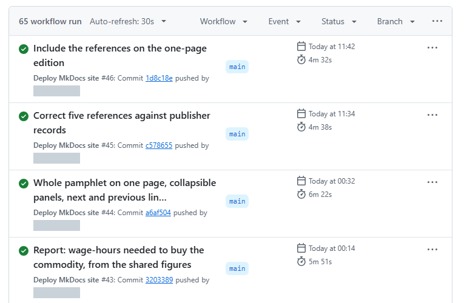
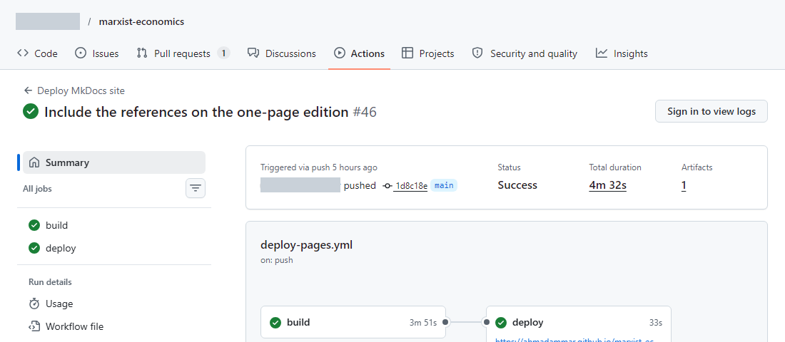

What the terms mean
- Continuous integration (CI) runs your checks automatically on every change, on a clean machine.
- Continuous delivery or deployment (CD) then publishes the result, but only if the checks pass.
A clean machine catches the classic fault of a project that only works on your own computer.
A first workflow
Save this in your repository as .github/workflows/tests.yml:
tests.yml
# Save as .github/workflows/tests.yml in a GitHub repository.
name: tests
on: [push, pull_request]
jobs:
test:
runs-on: ubuntu-latest
steps:
- uses: actions/checkout@v4
- uses: actions/setup-python@v5
with:
python-version: "3.12"
- run: pip install pytest
- run: python -m pytestReading it line by line:
onsays when to run: on each push and pull request.runs-onpicks a fresh virtual machine.stepsrun in order.usesruns a ready-made action, andrunruns a command.- If any step fails, the run fails, and GitHub shows a red cross.
See the results under the repository's Actions tab. Read the failing step's log from the bottom up, and find the first real error.
These are the Actions tab and one run from my pamphlet project, with the account name hidden. A green tick means every step passed.


From testing to publishing
A publishing workflow adds a job that only runs after the checks succeed. This is how my pamphlet's workflow works:
- Install Pandoc, LaTeX and a browser.
- Run the equation tests.
- Rebuild every page and PDF from source.
- Check links and numbers.
- Open every page in a browser, and test what readers see.
- Publish, only if all of that passed. Otherwise, the old site stays up.
Practical advice
- Pin versions of tools that affect output, such as
python-version: "3.12". - Keep secrets out of files. Store them in the repository's settings as encrypted secrets.
- Keep private work private. A public workflow's logs are public.
- Watch the time. Slow checks get ignored, so run the quickest first.
Hooks: checks before you push
A Git hook runs a script at a moment such as a commit. A file at .git/hooks/pre-commit can block a commit containing a secret or broken code, and a pre-push hook does the same before sending work online. Hooks aren't copied with a repository, so each person must install them. For a shared setup, look at the pre-commit tool.
Scheduled checks
CI can also run on a timetable, and on your own computer, Windows Task Scheduler or cron can run a daily health report that emails you when something changes. Keep alerts rare, because people stop reading frequent ones.
Text © Ahmad Ammar, licensed under CC BY 4.0. Example code © Ahmad Ammar, MIT licence. Written during a PhD supported by a Vice-Chancellor's Research Scholarship (VCRS) from Ulster University.